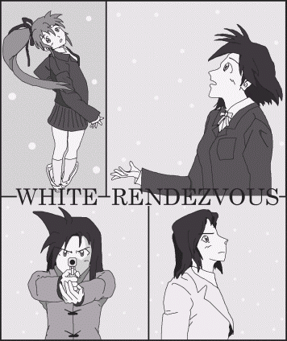

オレの名前は高校生名探偵・秋野薫［ピピッ］にゃぁああああああああっ！？……あー、、そうよ、マスターの陰謀（？）にハメられて、男言葉を喋ると（時には男の行動をすると）腕時計から電気ショックで、ビビビと感電しちゃうのよ……。って訳で、今のワタシは秋野薫ではなく秋野香織です。でも、慣れない恥じい女言葉を使わなきゃいけないし、マキはワタシを「香織ちゃん！」なんて呼ぶし、工藤はシリ触るし、姉キはムネ触るし……女の子やるのって、苦労の連続ね。……って、あーっ！やっぱり喋りにくいっ！マスター、お願いだからこの腕時計外してっ！！
……だが帰り際、マキが白い背広姿の男に狙撃された。誰なんだ？なぜマキを狙う！？それに、マキの様子もなんか変……。
「(香織ちゃんのハンドガン……アイツと同じ、銀色のデカイ拳銃！そう言えば香織ちゃんの雰囲気もどことなくアイツに似てたし、名前まで瓜二つ……。こんな偶然ってありえるの……？ひょっとして……ひょっとして香織ちゃんの正体は、まさか……！？)｣
Gentlegirl
作：ＴＲＡＣＥ
改めて登場人物紹介
・秋野 香織（あきの かおり：香織（ちゃん））
パッと見、恥ずかしがり屋の女子高生。だが実は彼女は数日前まで、頭脳明晰・冷静沈着・迷宮無しの高校生名探偵・秋野薫だった。薫の名探偵ぶりに恨みを持つ人々からみんなを守るため「秋野薫は死んだ」という事にし、彼もとい彼女は普通の女子高生を装い生活をはじめる……が、それは艱難の日々。
・平井 真貴子（ひらい まきこ：マキ）
薫の恋「違うの！わたしとアイツは、た・だ・の幼なじみなのっ！！」まぁ、そういう事です。薫の死に深く悲しむものの、入れ違いに転校してきた香織に妙な親近感を抱いている。笑顔が似合う長身の少女だが、父親は殉職・兄は生死不明という不幸な家庭の持ち主。チャームポイントは頭のクセ毛。
・江戸川 乱歩（えどがわ らんぽ：乱歩）
世界中で指名手配されている（本文参照）凶悪犯。もちろん本名ではない。犯行現場ではいつも白い背広で現れ、凶悪犯らしからぬ高貴な振る舞いが特徴。今までは顔見せ程度。彼と真貴子には何か因縁があるようだが、それは今回語られるだろう。
・和越 村君（わえつ むらなお：マスター）
薫の情報源、そして香織の居候主。パッと見普通のサ店のマスターだが、様々な所にパイプが繋がる、ある意味最も謎な人物。瀕死の薫を救うべく彼が投与した薬品の影響で、薫は女の子「香織」になってしまった｡「越」は漢文で「と」とも読むので、名前の読み方を変えると「ワトソンくん」になる。
・和越 乃恵美（わえつ のえみ：乃恵美）
父親であるマスターの陰謀によって喫茶ワトソンの看板娘に仕立て上げられた悲劇のヒロイン(？)。薫を兄のように慕う「理想の妹」(工藤談)。マスターとともに薫→香織の現場に立ち会った数少ない人物。
・秋野 美紀（あきの みき：美紀）
薫の姉。貧乳｡「うるせぇ！」性格は一言で言えば豪気。香織＝薫の事実を知っており、事あるごとに香織をいじめる香織最大の天敵。どこに勤めているのかは謎。
・松井 さやか（まつい さやか：さやか）＆工藤 響介（くどう きょうすけ：工藤）
どちらも香織（薫）と真貴子の友人（腐れ縁とも)。少々オバさんなのがさやか、少々おバカなのが工藤。わかりやすい人々である。
・芝浦警部（しばうら けいぶ：芝浦)
警視庁捜査課のベテラン刑事。薫とコンビを組んで数々の難事件に立ち向かっていた。なお香織には「秋野ムスメ」と邪険に接する。真貴子の父は彼の同僚だった。
・倉主 悠巡査部長（くらぬし はるか じゅんさぶちょう：倉主）
残業と始末書に追われる捜査課の中でも白眉のキレ者女刑事。美貌も兼ね備えた知的な女性で、警視庁のマドンナ的存在。英語をよく使うが、彼女が帰国子女かは不明である。
・高橋巡査部長（たかはし じゅんさぶちょう：高橋）
捜査課の実情を伝えて余りあるドジでマヌケな若手刑事。もちろん始末書を書く数は彼が一番多い。
３．東の都に舞う妖精
「Ａｈｃｈｏｏｏ（へっくしょんっ）！」
その日、倉主巡査部長は風邪気味だった。いつもは明るく振舞って仕事もテキパキこなす才色兼備な倉主刑事だけに、心配した本庁の面々が次々と声を掛けてくる。来る日も来る日も事件に追われている本庁の男たちにとって、倉主刑事はまさにマドンナ的存在なのだ。
そのマドンナの顔は少々やつれ気味のようである。
「倉主さん、どうしたんですか？なんか顔色が……」
「……いえ。Ｄｏｎ’ｔ ｍｅｎｔｉｏｎ ｉｔ」
倉主は鼻をぬぐって無様な鼻水を除去した。
課長の机に目を向けてみると、いかにもタヌキ親父といった風貌の捜査課長が、音を立て始めた受話器に手を伸ばすのが見える。
「……はいよ、こちら捜査課。……江戸川乱歩！？」
江戸川乱歩。その名前に反応して一斉に捜査課の面々が手を止めて課長に視線を走らせる。もちろん、倉主も。
受話器の向こうからは、以前成田で取り逃がした白い背広姿の男の声が聞こえてくる。
『警視総監は取り合ってくれないだろうからな。わたしの忠告、君たちの耳に届いているかな？』
「聞いてるよ。何が『日本政府に挑戦する』だ！ 貴様、ふざけるのもいいかげんにしろ！！」
『そうだな。もうおふざけは終わりだ。では、日本政府と警視庁に改めて要求しよう』
「誰が貴様の言いなりになるか！この凶悪犯め！！」
課長の怒鳴り声にもまったく動じず、受話器の向こうで男はかすかに笑った。
『課長。わたしも君のような頑固ダヌキに用はない。他のもっと聡明な者に代わりたまえ』
「きっ、貴様……！」
明らかに蔑まれて憤った課長は受話器を叩き戻そうとした。だが、課長の手から受話器をひったくった者がいた。倉主である。
「Ｈｅｌｌｏ？ で、聞かせてもらおうかしら。あなたの要求とやらを」
『ん？ 君はもしや空港の……』
「覚えていてくれて光栄ね。そう、私は倉主巡査部長よ」
倉主は白い背広姿の男と成田でやりあっている。お互い至近距離で顔を見合ったので、覚えている訳である。
『……いいだろう。では要求を伝えよう。録音の準備はいいかな？』
「変な心配しなくてもいいのよ。日本の警察はそれほど駄目な組織じゃないわ」
『そうだな。では要求を伝える。……80億を用意しろ。もし要求に従わない場合は、23区800万人の身の安全は保障しかねる。次の要求は追って伝える。では、よい返事を待つ』
倉主が物言う前に、通話はまるで業務通信のようにあっさりと切られた。
「課長。すぐの合同対策本部の設置を」
捜査を追えて捜査課に帰っていた芝浦も課長の机に歩み寄ってきた。
しかし、倉主にはどうしても腑に落ちない点がある。
なぜ今日になって要求を伝えてきたの？これっぽっちの要求なら、別に入国したその日にできる筈なのに……。
「わああああああああっ！？」
爆音とともに、香織は大きく後方へ吹っ飛ばされた。彼女の右手には性懲りもなく大口径拳銃デザートイーグルが握られている。
ここは喫茶ワトソンの地下に（なぜか）設置されている射的場。防音対策は完璧。香織とマスター、それに美紀はこの地下射的場に居合わせていた。
マスターは香織を起きあがらせると、呆れ返ったようにこぼす。
「あきらめな。いまのお前さんじゃデザートイーグルはやっぱ強すぎるって。しかも片手撃ち……」
「そうかなぁ〜？ やっぱ、相棒にフラれちゃったのか……」
デザートイーグルを床に置き、がっくりと肩を落とす香織。
今日の香織はＴシャツにＧパンのずいぶんとラフなスタイルだ。とは言っても、単に薫の頃の服をただ着ているだけなのだが。だから、いまの香織には若干大きめである。それでも、中身は女物下着なのが今の香織には悲しかった。
隣では姉の美紀が西部劇でおなじみのリボルバー銃コルト・ピースメーカーを両手で構えて発砲している。正面の的には中心付近に弾痕が六つ。なかなかの腕前だ。
「そもそもなんでデザートイーグルなんて大物を持ち歩いてんだよ、おめーさんは？護身用ならジェームズボンドみたいにワルサーＰＰＫを持ち歩けばいいだろうが」
リボルバーを手の中で回転させつつ、美紀がツッコむ。すぐに香織が答えた。
「探偵の銃は人に向ける為だけのモンじゃないのよ。この前みたいに扉の鍵を破壊したり、逃走車の足止めをしたり、だったら威力のあるほうがいいでしょ？」
「おお薫、だいぶお前さんも女言葉が自然になってきたな」
「……ンな訳ねェだろッ！！」
［ピピッ］
「ぎぃええええええええっ！？」
左腕の時計はどんな時でも、わずかな男言葉たりとも聞き逃さない。地獄耳な聖人君子だ。
別に香織は好き好んで女言葉を使っている訳ではない。女言葉を話さざるを得ないから、話しているだけなのだ。
オレだって普通にしゃべりたいんだよぉ……。
「ま、どの道デザートイーグルはあきらめな。そこで……」
マスターはそう言って、背後のロッカーに手をのばした。ロッカーの中から取り出したのは拳銃一丁。
「……ワルサーＰ99でどうだ？ こいつは軽いぞ」
「えー、やだよ、そんなオモチャっぽいおニューの銃なんて……」
香織はあっさりとＰ99を放り投げる。マスターはロッカーを観音開きにしてさらに拳銃を取り出す。それにしても、銃の博物館が開けそうなほどのすごい量の拳銃だ。
「グロックＧ17は？」
「これもオモチャっぽくていや」
「なら、お前さんのデザートイーグルつながりでジェリコ941は？」
「ス●イクとダブるし、スパイ●は何か好きになれない」
「同じ文字を伏せろ……じゃあ、べレッタＭ1934は？」
「ノ●ールじゃんか（あっ）ノワー●でしょ、それって」
「だから同じ文字を伏せろっての…… ほんなら、コルト・キングコブラは？」
「パイソンのパチモンか…… リボルバーは６発しか撃てないから役立たず」
「貴様ぁ、リボルバーを馬鹿にしたな！ アタシのパイソンとアナコンダで……踊れェッ！！」
「え？……ひぇぇっ！？ やめて、やめて、撃たないで姉キ、やめてぇぇぇっ！！」
「ほらほらもっと踊れ踊れ踊れェッ！！」
「や、や、やめてぇぇっ！！」
「……そのくらいにしとけ、美紀」
「あいよ、今のでちょうど12発、ブレークオープン……と」
「ふぇぇん、姉キなんか嫌いだぁ……」
「……じゃあ改めて、Ｍｋ23ソーコム」
「ソーコム？●ネークとかぶる。ワタシはス●ークみたいに渋いオジさんじゃないしぃ」
「だから同じ文字を伏せろって言うとるだろ……ほんなら、スチェッキンはいかが？」
「●ジカとかぶるし、ワタシはナ●カみたいにスパイじゃないからイヤ」
「同じ事を何度言わせる気だ……では、ロシアつながりでＴＴ33トカレフ……ゲッ！？こいつは中国の粗悪品、54式！アイツ、こんなまがい物を売りつけおって……」
「マスター……？」
「もういい。では有名どころでベレッタ92ＦＳは？」
「ＦじゃなくてＦＳなところがミソなのね。うーん、でも……」
「だったらザウエルＰ226、いやサイズ的にＰ220でどうだ？」
「うーん、どれも気にいらないの……よね……」
「えーい、じゃあ止めのジャイロジェット！」
「ロケット式拳銃……またマイナーなモノを……」
二人のマニア話である。作者もネタ切れで疲れてきた。床もデスクトップも拳銃でいっぱい溢れ返ってしまっている。マスターも香織のゼータクに付き合いきれなくなった。
「あーあ、やってられんわい。こうなりゃカナダの知人に頼んで、虎の子を取り寄せてもらうか……」
「張り子の虎じゃないだろうね？」
香織はツッコミを入れた後、大きなため息をついた。
「もういいや、しばらく丸腰でも。マスターの“虎の子”を待つとするか……いや、待てない！オ（おっと、『オレ』じゃないか）ワタシ以外に、誰がマキを守れる？こうなりゃ探してやる、ワタシにしっくりくる、新たな相棒を……じゃなくて、新たなダーリンを！うおぉぉぉ――っ！！」
妙に熱血した香織は、一度は捨てた拳銃の山を改めて拾い出し始めた。
「ダーリンってな、おめーさん、変なトコだけ女っぽくなってきたな……」
完全に呆れかえった美紀だった。
「ああっ、ダメだ。ワタシはどの拳銃にもフラれた……」
朝っぱらから香織は悩んでいた。今日の通学、護身用というよりは真貴子を守るため、どの拳銃を持っていくべきか。だが、妙なこだわりが災いして決まらない。
「電磁警棒で我慢するか……拳銃に勝てる訳ないけど」
香織はあきらめ、朝食を摂りに居間へと足を運んだ。
朝食中に流れてくるテレビのニュースに耳を傾けていると、箸が止まった。アナウンサーが淡々と原稿を読み上げている。
『昨日、警視庁に国際手配中の凶悪犯・通称「江戸川乱歩」から脅迫の電話がかけられ、現金80億円を要求してきました。これに対し、警視庁では特別合同対策本部を設置し、今後の対応策を打診しているとのことです』
「『えどがわらんぽ』ぉ？」
聞きなれない、というより凶悪犯にしては何とも不可解な名前だった。江戸川乱歩と言えば日本のミステリー作家の草分け的存在。怪人二十面相ならともかく、凶悪犯には似合わない名前だ。なぜそんな名前を名乗っているのだろうか？
「インターポールが指名手配している凶悪犯だよ。本名はもちろん年齢・経歴・国籍にいたるまで一切不明。各国の警察の目を嘲笑うかのように次々と現金輸送車襲撃や要人暗殺を成し遂げてしまうという人物だ。彼が今までにかかわった事件は数知れないと言われているが、彼がやったと立証できたものは一つもない。鮮明な顔写真だってろくに残っていないのだ」
マスターが江戸川乱歩について説明した。
「なんでパパはそんなに詳しく知ってるの？」
「ワシらの間では割と有名な噂話だ。他にハッキリしている点といえば、犯行現場でも白い背広を身につけていて、ＦＮハイパワーとワルサーＷＡ2000を愛用している点、ぐらいか……」
「白い背広姿の男……ＷＡ2000……マキを狙撃した奴か……」
あの時、建物の屋上に白い背広姿の男が見えた。となると、真貴子を狙撃したのは乱歩ということになる。
「……しかし、なんで江戸川乱歩はマキを……？」
香織は訝らずにはいられなかった。
「それに、あの狙撃……確かに外れた……いや、外したのか？」
そして、その真貴子も同じニュースを目にしていた。「江戸川乱歩」の名が読み上げられるや否や、テレビに鋭い視線を走らせる。
「……やはり、来ていたのね……」
真貴子の瞳に、何かを決意した光が宿った。
今日も学校ではつまらない授業が淡々と続いていた。別に香織の成績が悪いからではない。今朝のニュースが気になって、授業どころではなかったのだ。
授業が退屈だと教師の流麗な説法は程よい睡眠薬と化す。授業が終わるなり、香織は一切の思考を放棄して机につっ伏してしまった。
ふと気がつくと、香織の視界の前には青空が広がっていた。初夏のさわやかな風が身の回りを駆け抜け、スカートの裾が風になびいた。
「……ん？」
だが、スカートの丈が明らかに違う。いや、服の肌触りも明らかに違う。今の自分が身にまとっているのは、ウエディングドレスと見紛うような純白のドレス、いや、まさしくウエディングドレスそのものだった。
な……なんでオレはこんな格好を……？は、恥じい……。
自分のドレス姿に香織の脳は一瞬でオーバーヒートした。
と、背後で響き渡る大きな鐘の音が香織の思考を復旧した。おそるおそる振り返ってみると、確かにうしろには大きな鐘を有した教会がある。
香織はとてつもなくイヤーな予感がしていた。ウエディングドレス、鐘、教会――まだ一番大切なモノが足りないはずだ。
当たってほしくない予想は当たってしまった。教会の扉が開かれ、真っ暗な室内から白いタキシードが現れた。つまり、香織のフィアンセということになる。
「待たせたね香織ちゃん」
日頃から聞き覚えのある声だった。香織はすぐに正体を悟って後ずさりする。
「ゲッ！？く、工藤！？」
「もう君を一人にはしないよ、俺がずーっと、ずーっと離さないから……」
白いタキシード姿の工藤は有無を言わさず香織に迫ってくる。
「ま、待って工藤！早まるな、話せばわかるッ！！」
問答無用である。
しかも慣れないヒール靴なんか履いて後ずさりするから、すぐに足を取られて無様に転びそうになってしまった。だが間一髪、工藤に受け止められて助かった。
いや、助かったと思ったのは愚の骨頂であった。今の香織は完全に工藤に体重を預ける形となっている。つまり、工藤に抱きかかえられている訳だ。しかも二人の顔はすぐ近くまで接近していた。次に何が待っているか、予想したくはなかった。
工藤の顔が、唇が、香織の唇を奪うべく迫ってくる。だが、今の香織にはもうどうしようもない。そして、ついに触れ合う二人の唇……。
「うわああああああああッ！！」
香織は机に突っ伏していた身体をビクンと起こした。
「……あ……れ……？」
景色がいつのまにか教室のそれに戻っていた。周囲ではおとなしく自習する生徒、軽くおしゃべりする生徒、机に座って悪友と雑誌を読み合う工藤。見慣れたいつもの景色だ。自分が身につけている服も、普通のブレザー制服。もっとも、この制服姿はまだ見慣れている訳ではないのだが。
……夢か。助かった……。
胸をなでおろす香織。しかし吐き気を催しそうなおぞましい光景はしっかりと頭の中に刻み込まれてしまった。
あー、しかしなんであんな夢を……？
そこで、はたとひらめく。
まさか、予知夢？だとしたらオレの将来は工藤のおヨメってコト！？
「わぁぁっ！？」
自業自得だった。とうとう香織は胃の中の物を戻しそうになってしまい、他の生徒の視線も気にせずに一目散にトイレへ全力疾走していった。
そして童話「王様の耳はロバの耳」の如く、洗面台に向かって絶叫する。
「オレは工藤のおヨメじゃねぇぇ―――――ッ！！」
胃の中の物を吐き出すと同時に、言ってはならない禁断の単語をつい口に出してしまった。耳ざとい左腕の時計がそれを聞き逃すはずが無い。時計はしっかりと香織に喝を入れた。「歯ぁ食いしばれ！そんな女、修正してやるッ！！」と……。
［ピピッ］
「これが若さかぁああああああああッ！？」
数分後、著しく顔色の悪い香織が教室に戻ってきた事は言うまでもない。しかも、少々臭かった。
秋野香織は転校生である。となると、当然部活選びをしなくてはならない。
いや、むしろそう考えているのは工藤とさやかのようだ。
「香織ちゃん、ウチのサッカー部のマネージャーになってよ！」
「ええええっ！？やだ！やだ！！ワタシはぜぇぇ――ったいに、やだッ！！！（オレは工藤のおヨメじゃねぇッ）」
「嫌われたわね、工藤くん……」
だが、いつもならそこに加わっていそうな真貴子の姿がない。他のクラスメートに聞くと、真貴子は既に帰ったという。理由は全く聞いておらず、やけにそそくさと帰ってしまったらしい。
マキ……一体どうしたんだ？
昨日の夕方、真貴子は明らかに江戸川乱歩に狙われた。今この瞬間だって真貴子は照準を合わせられているのかもしれない。そうとしか考えられないから、香織は不安で心配で仕方がなかった。部活選びなどしている気分ではない。
「面！ 面！！ 面ェェ―――ン！！！」
急に聞こえてきた怒号に、三人は思わず顔を同じ方向に向けた。
この掛け声は間違いなく剣道部のものだ。
香織も憂鬱な気分を晴らすべく、剣道場に立ち寄ってみた。中央で壮絶な打ち合いを演じている組が一組。先程聞こえた掛け声は、彼らが放ったものだろう。
と、片方の相手が相手の凄まじい剣圧に負けてよろめく。
「面ェェ―――ン！！」
左手だけで握った竹刀で面を一本。見事に決まった。
竹刀は見た目以上に以外と重い。片手で鋭敏に扱いこなすのは至難の技なのだ。
「へぇ、大したもんだ」
香織が素直に感心した時、更衣室の方が急に騒がしくなった。
「鞍馬！お前か、俺の定期代を盗んだのは！？」
「えっ！？違います、僕じゃありません！」
「ここにはお前しかいなかっただろ！？」
どうやら、盗難事件が発生したらしい。事件。香織が興味を示さないはずはなさそうだが……。
「ちょっとアンタねぇ！」
先に興味を示した、いや介入したのはさやかの方だった。さやかは有無を言わさず、ずかずかと更衣室に入りこんでくる。
更衣室内には男子生徒が二人。見るからにがっちりした体格なのが、定期代を盗難されたと主張する、高２の太田。そしてその太田に言い寄られているのが、まだ童顔の高１・鞍馬だ。
理不尽な言いがかりに物申すつもりなのか、さやかは二人の前に立ち……
「ちょっとアンタ、鞍馬くんをいじめる気？」
あれ？
「アンタはこんなカワイイ子を殴ろうっての！？殴りたいんなら、私を殴って！」
「……はぁ？」
呆気に取られたのは太田の方だ。突然現れたこの女、何か勘違いしているようだ。
「さやかさん、アンタが絡むとややこしくなるから、ちょっと引っ込んでて」
言い諭したのは工藤だ。いつもは立場が逆なはずだが、大変珍しい。
ようやく香織にも話に割って入る余裕ができた。集まり始めた人込みを掻き分け、太田と鞍馬、両部員の前に歩み寄る。
「まずはどんな状況なのか、お聞かせ願えますか？」
香織に対し、鞍馬がまだ幼さの残る顔に怪訝な表情を返す。
「あなたは？」
「ボクの名は秋野薫（わぁ、また間違えた！）……秋野香織。ただの女子高生ですよ」
ただの女子高生は「薫」の口調で、そう名乗った。
とりあえず被害者・太田の話をまとめると、太田が着替えの最中、ちょっと急用ができて更衣室を後にし、戻ってきたところで置きっぱなしにしていた自分の財布を調べたら、財布の中にいれておいたバスの定期代がすっかりなくなっていたという。更衣室から離れていた時間はほんの数分程度。この間、更衣室内には鞍馬しかおらず、他の部員や部外者が更衣室に立ち寄った形跡もない。
となれば、必然的に犯人は確定してしまう。
「でも僕は、ついさっきまでトイレに行ってたんです！」
これが鞍馬の反論だった。
「そんなのウソに決まってる！」
凄まじい剣幕で怒鳴り、とうとう太田は鞍馬に飛びかかろうとしたが……
「やめてっ！ こんなカワイイ鞍馬くんをぶつなら、私をぶって！！」
またもやさやかが介入した。
「……はぁ？」
戸惑う以前に、太田は呆れた。この女、やはり何か勘違いしているようだ。
「だからさやかさん、話を変な方向に持っていかないで……」
いまの工藤は珍しく冷静だ。いや、その分さやかがおかしいだけか。
しかし、どうしようもない。確かに、鞍馬のような優しそうな生徒がお金を盗むとは思えない。だが、鞍馬が主張する事が本当だとしても、それを立証するのは限りなく不可能だ。
「鞍馬くんがトイレに行ってたってアリバイさえ立証できれば……」
工藤は真剣につぶやく。しかし立証といっても、まさかトイレで鞍馬の排泄物を回収する訳にもいくまい。もっとも、回収できればの話だが。
香織にしてもそれは同じ。とりあえず周囲を見回し、なんとかアリバイの立証できそうな証拠品を探す。
ロッカー、衣服、備品。
と、着替え中の鞍馬の姿を見て視線が止まった。
――あった。完璧な証拠が！
「鞍馬くんは確かにトイレに行ってましたよ」
「ん？香織ちゃん、どうしてわかるんだ？」
「ホラ、開きっぱなしになってる鞍馬くんのズボンのチャック、よーく見て。あそこから見える白いモノに、真新しい黄色いシミが」
なるほど、確かに香織の言う通り、着替え中の鞍馬のズボンから見えるパンツには黄色いシミが付いている。これぞ確固たる証拠……
「……って香織ちゃん、いつの間にそんなトコ観察してたんだ！？」
「え？……あ！」
つまり、香織という年頃の少女が、年頃の少年の股間をしげしげと観察していた、そういう事になるのだ。変態である。
「わぁぁっ！？か、勘違いしないで！お願いだから勘違いしないで！！」
いくら香織が顔を真っ赤にしても、勘違いするなと言う方が無理である。
「でも、だったら太田の定期代は一体誰が？」
「多分家に忘れてきたんじゃないですか？」
平然と言う香織。太田は驚きを持ってその答えを受け止めた。
「何！？俺はちゃんと定期代を自分の財布に入れて……」
言い返す太田にも香織はまったく動じない。
「なら、あなたの家に直接電話して確かめてみましょうか。さやかさん、ケータイ貸してあげて」
「え？あ、はい、これね」
さやかは慌てて携帯電話を取り出し、太田に手渡す。
「まあいい、どうせ無駄だろうけど」
太田はふてくされたまま、自宅に繋いだ。
「もしもし母さん？俺だけどさ、一応確かめたい事が……へ？……え？マジ？……マジなの、そう……。いや、そんな気がして……うん、ほんじゃ……」
さっきまでの剣幕はいつのまにか消えていた。
太田は鞍馬に向き直り、深々と頭を下げる。
「ごめん鞍馬！俺の勘違いだった！！」
この一言で、鞍馬の容疑は全て晴れた。
つまり、元から太田は定期代を家に忘れていた、それだけの事だったのである。だがそれに気付かず、今盗まれたとつい勘違いしていたのだ。太田の早とちりと言ってしまえばそれまでだが、濡れ衣をかけられた鞍馬にとってはいい迷惑である。
「先輩……いや、わかってくれればいいんですよ……」
「しかし、普通忘れた時点で気付くと思うけどねぇ」
さやかの毒舌が太田にグサッと突き刺さる。
「まぁまぁさやかさん。こういう事って、以外と多いんですよ」
香織がなだめた。
「今回の場合と似た状況が『スリ』の手口ですね。犯行直後、被害者はスられた事実に気付かず、いざ必要となった時点でようやくスられた事に気が付くんです。いくら高価な貴重品でも、身に付けているうちはいちいち持ってるか確認しないはず。で、肌身から離した時になって不安になって持ってるか確認する。時既に遅し、犯人はとっくに行ってしまって被害者泣き寝入り、って事ですよ。太田くんのケースも、いざ財布を放ったらかしにするまでは定期代を持ってるか確認する意味がなかったんですね。だから、忘れていた事に気付かなかったんでしょう」
「なるほど」
その説明に居合わせていた一同は納得する。だが彼らは気付かなかった。いまの香織の物言いがまさに「薫」そのものであった事を。
と、一人の剣道部員が香織たちの方へ歩み寄ってきた。甲冑を着たまま脱ごうともせずに。その甲冑には見覚えがある。先程、練習とはいえ壮絶な打ち合いを演じていた相手だ。
「……お見事！貴公の鋭い洞察力、誠に感服致した……」
やけに慇懃な態度で挨拶をする部員。だが、面に阻まれてその素顔が見えない。
だが、その声は女のものだった。しかもその体格は高校生にしてはやけに大きめだ。教職員ぐらいあるだろう。
「ワタシに何か用ですか？」
「それに、その鋭い観察眼……貴公、よほどの腕利きと見える。もしよろしければ、私とお手合わせしては下さらぬかな？」
「おもしろそうですね」
香織は二つ変事で引き受けた。
「か、香織ちゃん、マジかよ！？」
「秋野さん！？」
びっくらこいたのは工藤とさやかの方だ。しかし、香織は既にブレザーを脱いで身近に置いてあった甲冑を身につけ始めている。やる気まんまんだ。
あれ？でもさっきの声、どっかで聞いたような……。
単に気のせいだと思い、竹刀も受け取って道場の中央に歩み寄る。
剣道着・軽装仕様。単に制服の上から甲冑を纏ったに過ぎない。つまり、袴ではなくプリーツスカートのままである。
「おお、うまくすれば、香織ちゃんの中身が見えるかも」
「工藤くん、アンタ何考えてんのよ……」
対戦形式は待ったなしの一本勝負、先に技の決まった方が、文句無しに勝ちである。どう考えても剣道部員の方に分がある。さやかも工藤もそう思うのは当然である。
しかし、香織には勝算があった。
フフフ……オレだって犯人とっ捕まえるために、護身術は身体にしっかり叩きこんでんだ。場数だって踏んでいる。むざむざとやられはせん！
両者向かい合って一礼。竹刀を正眼に見据える。
「始め！」
審判の合図と共に、いきなり相手の竹刀の切っ先が飛んできた。
すり足で半歩動いて即座に回避に転じる。いや、かわす事を読んでいたのか？
だが戦場においては、一瞬の迷いが命取りとなる。
「面ェーン！」
「うおっ！？」
ほんの一瞬でも回避が遅れたら、間違いなく面一本を取られている所だった。真剣勝負なら頭頂部をかち割られているところだろう。
香織は必死に次の手を模索している。
突きのリーチは他の面や胴に比べると長い。また、移動モーメントも他の技より少ないので攻撃スピードも速く、相手が竹刀を振り上げた一瞬の無防備なスキに喉元へ一撃喰らわす事もできる。反面、喉元の一点だけを狙うので命中率が低く、外れてしまえば今度は自分が無防備になってしまう。
考えているスキに相手が斬りかかって来た。香織もすぐに竹刀を突き出して受け止める。
工藤とさやかのみならず、太田や鞍馬を含めた剣道部員全員が、二人の鍔迫り合いを手に汗握って部活そちのけで見入っている。
「やぁぁっ！」
相手が香織の竹刀を打ち払って、反動で一旦後退する。
「うおっ！？」
強烈な一撃に、思わずバランスを崩してしまう香織。
相手はその一瞬を見逃さない。適度にとった間合いから、必殺の一撃を繰り出す。
「突き！」
矢を射るように足を大きく踏みこみ、竹刀の切っ先を香織の喉元めがけて突き出す。香織にはよける事も打ち払う事さえできなかった。力負けして、香織の竹刀が手元から弾かれる。
丸腰になった香織に、相手は竹刀を悠然と突き出した。それで決まった……はずだった。
「まだだぁ！」
取り落した竹刀に向かって香織が跳ねる。しかし、甲冑をまとっているのだ。機敏に跳躍できる筈がない。相手もすぐにそれを見抜いた。
「甘い！」
止めの一撃が繰り出される。竹刀に跳んだ香織の、喉元めがけて。今の香織は宙にいる。よける事もままならない。今度こそ決まった……はずだった。
香織は叫ぶ。
「オレは……オレは負けないッ！！」
完全に必死だった。だが、左腕の時計はこの状況を緊急事態とは判断してくれなかった。そう、もっとも恐れていた事態が起こったのだ。
［ピピッ］
「おおおおおおおおおおっ！？」
だが――
「むっ！？」
切っ先が香織の喉元を捕らえんとしたその刹那、目の前から香織の姿が消えた。
まさに怪我の功名だった。腕時計からほとばしった高圧電流で香織の筋肉が急激に収縮し、通常の数倍の腕力で床を押し返していたのだ。おかげで香織は通常では考えられないような跳躍力を発揮し、剣戟が来る前にその場から逃れる事ができたのだ。
右手を伸ばして竹刀を拾い、無防備となった相手の脇腹めがけ薙ぎ払う。
「胴ォォ――ッ！！」
……足元！？
相手は驚愕し、慌てて足元めがけて竹刀を突き出す。その一瞬のためらいが命取りとなった。
二人の動きが止まった。
相手の竹刀は香織の喉元を射抜くことなく虚空を貫き、香織が右手に構えた竹刀は相手の左脇腹に突き付けられていた。
観客たちはすっかり言葉を失っていた。
「ぴ、ピンク……ホントに見えた……」
「アンタって奴は……」
もちろん、これは剣道の一本勝負である。竹刀を弾かれた時点で、香織は判定負けだ。だが仮に真剣勝負の決闘だとすれば、上下真っ二つに寸断されていたのは相手の方だったはずだ。
香織は面を外し、大きな息を吐き出して肩の力を抜く。
そして、目の前の相手は――。
「うふふふ……Ｇｏｏｄ ｊｏｂ，Ｍｉｓｓ」
いよいよ聞き覚えのある口調だった。
相手は面に手を掛け、ゆっくりと脱ぐ。
「さすが芝浦警部を唸らせただけの事はあるわね……秋野香織さん」
「あああっ！ あああっ！！ く、倉主刑事！？」
香織は絵に描いたように腰を抜かしておったまげていた。
なぜ今まで気付かなかったのだろう。香織が死闘を演じた相手、それは倉主巡査部長だったのである。
「な、なんで倉主刑事がうちの学校に！？」
「え？ この人、刑事さんなの？」
「Ｙｅｓ。ここは私の母校なのよ。昨日の夕方、この近くで発砲騒ぎがあったでしょ？今日の午前中にその実況検分をして午後はもう休暇を取ってたんだけど、せっかくここまで来たことだし、なんか風邪気味の自分に喝を入れようと思ってね」
「し、知らんかった。倉主刑事が本若菜学園出身だったなんて……」
「ところで秋野さん、どうして私の事知ってるの？」
「（ドキッ！？）あ、そ、それは、まぁ……マキさんに聞いて……」
倉主と香織に面識はない。だが倉主と「薫」は顔なじみだ。実にややこしい。
誰にも気付かれず、道路の下で静かに時を刻む時計の存在があった。ただ定められた時間を目指して刻一刻と動いていく。１秒、そして１秒。
それは、大いなる災厄への、そして再開へのカウントダウンだった。
警視庁、江戸川乱歩特別合同対策本部。
芝浦はそこで凶悪犯・江戸川乱歩の資料に目を通していた。昨日高橋刑事が香織との衝突がてら、廊下にぶちまけてしまった資料でもある。
「芝浦警部！」
自分を呼ぶ声に振り返った芝浦は、普段はいるはずのない人物の姿を目にした。
「真貴子くん……どうしてここに？」
「……」
真貴子は何も答えない。が、すぐに顔を上げて、小さな声で、しかし明確な口調で芝浦に告げた。
「……捜査に協力させて下さい！」
「なっ！？」
その場に居合わせたすべての刑事が絶句した。再び書類を床にぶちまけてしまった高橋さえも―――。
「け、警部っ！」
奇妙な空気を断ち切ったのは血相を変えて駆けつけた刑事だった。どうやら、ただ事でない事が起こったらしい。しかし、もたらされた情報は警部たちの予想をはるかに越えたものだった。
「多摩川を渡る主要道路が、次々と爆破されたそうです……」
「何だとォ！？」
芝浦が驚愕のあまり声を張り上げるのと同時に、対策本部の電話がけたたましく鳴り響いた。刑事たちが視線を血走らせる中、部長が受話器を取る。
「こちら警視庁江戸川乱歩特別合同対策本部………江戸川乱歩か！？」
刑事たちの視線がいっそう電話に注がれる。芝浦たちは気付かなかったが、真貴子の表情もいつになく険しかった。
部長は皆に聞こえるように拡声ボタンを押す。
『なぜこのタイミングで電話してきたか、わかったかな？』
「……むっ！？では、あの爆破はまさか貴様が……」
『ご名答。これでわかっただろう？同様の爆弾が各地の道路に仕掛けられている。23区民800万人の身の安全を確保したいのなら、早く決断することだ。では、よい返事を待っている』
それきり、通話は切られてしまった。
「……なんてことだ……」
部長は受話器を戻すのも忘れて、ただ立ち尽くすしかなかった。
江戸川乱歩が見せしめを実行したことで、もはや警視庁も日本政府も乱歩に従わざるを得なくなってしまったのだ。対策もこれからは後手に回ってしまうだろう。少なくとも、80億を用意する姿勢は見せなければ次に何をされるか知れない。
『……政府に対し現金80億円を要求してきた凶悪犯・江戸川乱歩は本日夕方の多摩川道路連続爆破事件に対して犯行声明を発表し、政府は犯人の要求を受け入れることを公表しました。なお爆破に使われた火薬は、昨日横浜の火薬倉庫から盗難された物と同一成分であり、同一犯とみて捜査を進めるとのことです』
アナウンスをバックに、爆破された道路の無残な姿がテレビに映し出されていた。
「……しかし、80億円と800万人とは、ずいぶんと大きく出たな。一人当たり1000円か」
ニュースを傍らで見ていたマスターがつぶやく。
「だが、そこまでして乱歩は一体何をやらかそうと言うのだ？」
「オレには犯罪者の気持ちなんてわからねーよ」
居間の入り口から香織の声が返ってきた。
香織は風呂上りのタオル姿だ。その左腕に時計は巻かれていない。以前発生したとんでもない事態を繰り返させないため、風呂に入る時だけマスターが外してくれるのだ。だから今は、安心して男言葉を喋れる訳である。
「おお薫。今日は早かったね？さては女の身体に慣れたかな？」
「ンな訳ねェだろッ！！」
歴史学者カール＝マルクスは語りき。歴史は繰り返す。ただし２度目は悲劇として、３度目は喜劇として。香織がこんな風に怒鳴るのはちょうどこれで３回目だ。こんな風に怒鳴るたび、いつも香織本人がトバッチリを受けるのだ。
もちろん、悲（喜）劇は繰り返す。
怒鳴った拍子に、胸元まで巻いていたバスタオルがハラリとほどけた。
「い、いやぁぁ、み、見ないでぇぇぇっ……」
床にしゃがみ込んだ香織は両腕で自分の裸体を隠して、顔を真っ赤に染めた。こういう反応は、もはや普通の女の子である。自分で自分の裸を見て恥ずかしがっている点以外は、であるが。
『あ、ただいま新しいニュースが入りました。つい先程、東北自動車道川口ジャンクション付近で爆弾のような不審物が発見されました』
「……爆弾？」
その単語につられて、香織はタオルを拾ってテレビの前に歩み寄る。
『道路公団はこの件に関連して、他の主要幹線道路でも爆弾らしき不審物が発見されたとの未確認情報と合わせて調査を開始する見込みで、それに伴って次の道路が安全のため通行止めになります。国道４号線……』
テレビを見つめるマスターと香織の目が険しくなる。
「お、おい、薫、まさかこの爆弾騒ぎも……」
「ああ間違いない。奴の、江戸川乱歩の仕業だ」
香織は大きくうなずき、断言する。
「これでわかったぞ。乱歩の狙いは、東京に通じる道路網を麻痺させることにあったんだ。神奈川から23区への道は、多摩川を渡る主要道路が爆破された今では一般道だけ。そして同じような事が23区へ通じるすべての主要道路で発生すれば……」
「……23区へ通じる一般道は、大渋滞だ……」
本庁の対策本部でも、同様の見解に達していた。
対策本部室で、刑事部長は体の力が抜けたかのように椅子にもたれた。他の刑事たちも魂滅入った顔をしている。まさか「800万人の身の安全は保障しかねる」という脅迫が、こんな意味だったとは。
そんな彼らの心境を嘲笑うかのように、本部の電話が再び音を立てた。近くに居合わせた芝浦が受話器を取る。
「……江戸川乱歩だな？私は捜査一課の芝浦だ」
『……なるほど。芝浦警部、ご無沙汰です』
「何？」
乱歩の返事はまるで芝浦の事を知っているかのような口調だった。しかし、芝浦は乱歩が起こした事件を担当した事はおろか、明確な乱歩の顔写真だって拝見していない。どう考えても、芝浦と乱歩に接点は無いはずだ。
『そろそろ、気付いたようだな』
「……あ、ああ。大きな事を考えたな」
『念のため言っておくが、見つけた爆弾は下手に解体しない事だ。23区民を危険にさらしたくなかったらな』
「くっ……」
それでも芝浦は内心の憤りを押さえ、話を続ける。
「それで、次の要求は何かね？80億円は現在着々と用意を進めている。その80億の受け取り先は、どこなのだ？」
それからしばらく乱歩の要求は続いたが、他の周囲の者にはその会話の内容はわからなかった。芝浦は拡声ボタンを切ってしまったのだ。
「……わかった」
乱歩との通話は終わったようだ。芝浦は受話器を戻し、まだその場にいた真貴子に向き直った。
「真貴子くん、君はそろそろ帰りたまえ」
「そんな！？」
抗議の声を上げる真貴子に対しても、芝浦は厳しい口調を変えなかった。
「もう夜も遅い。これ以上は、君の母親が心配するだろ？」
「で、でも……」
だが、確かに芝浦の言う通りだ。これ以上ここに居座っていては、母親が帰りを心配するだろう。それに自分は所詮単なる女子高生。刑事たちの捜査に関われば芝居警部たちに迷惑をかけてしまう。
「……わかりました」
しかし、本心ではまだ諦めてはいなかった。
コートを羽織った真貴子は芝浦たちに背を向け、振り返ることなく対策本部を後にした。
「すまんな。捜査に協力したいという君の気持ちはわかるのだが」
向き直った芝浦はベテラン刑事の顔に戻っていた。
「現金の受け取り先は東海道貨物線内の東高島貨物駅です」
刑事部長は芝浦の報告に頷き、そして意を決したかのように次の言葉を切り出した。
「Ｓ.Ａ.Ｔ.を出すぞ！」
「ぶ、部長！？」
騒然となる本部室内。
「乱歩は間違いなくそこへやってくる。そこで、あらかじめ東高島にＳ.Ａ.Ｔを待ち伏せさせ、奴が現れたら短期決戦に持ちこむのだ！場合によっては、銃殺も止むを得ん！！いいか、絶対にこの作戦は公表するなよ！」
「しかし、何もここでＳ.Ａ.Ｔ.を使わなくても……！」
一人の刑事が反論する。他の刑事も同様の意見のはずだ。
「今回が唯一のチャンスなのだ！奴を捕らえるチャンスはな……！！」
部長の一喝に、本部室内は黙り込んでしまった。
しかし、別な意味で黙り込んでいた人物も、もう一人。
「江戸川乱歩は、東高島貨物駅に来る……」
真貴子は帰ってはいなかった。本部室の扉の裏で、室内の話を聞いていたのだ。部長の声の大きさが幸いして、会話の内容は簡単に聞き取れた。
真貴子は瞳に危険な光を灯らせて、その場を後にした。
こうして対策本部内の最高機密は、真貴子には筒抜けとなったのである。
＊ ＊ ＊
「あ〜〜〜〜、寒い」
今朝はとてつもなく寒い。外気がまるで南極のように感じられる。しかも空は曇りがちで日光も射していない事が、余計に寒さを助長していた。
「ズボンなら寒くないのに……」
女子生徒がスカートなのは男尊女卑だと思う香織である。タイツは履く気になれない。
しかし、いつもなら通学路の途中で会うはずの真貴子の姿がない。
最近のマキは明らかにおかしいぞ……。
それもこれも、江戸川乱歩が現れて以来だ。
乱歩と言えば、今朝は乱歩関連の新しいニュースはなかった。現金80億円だって用意が進んでいるはずなのに、その辺のニュースもまったく流れていない。
なぜ奴はマキを狙った？いや、狙ったならなぜ外したんだ？それに、なぜ「江戸川乱歩」なんだ？なんか気になるな……。
真貴子と乱歩。香織はますます二人の関係がわからなくなっていた。
「マキ……どうしてワタシには何も話してくれないの……？」
香織は空を仰いでつぶやいた。同じ空の下にいるはずの、真貴子に向けて。
その頃、真貴子は学校とはまったく逆方向に足を運んでいた。その表情は険しく、いつもの笑顔は削ぎ落とされたように消えていた。
駅の改札を通り、横浜方面行きのホームで電車を待つ。そこでふと、思い出したようにブレザーの懐に手を入れた。
ブレザーの懐に入っているのは小型拳銃ＦＮ
Ｍ1910ブローニング。
真貴子はしばし目を閉じ、物思いにふけった。
頭をよぎるのは懐かしい思い出。
「マキ、ハッピーバースディ・トゥ・ユー」
誕生日、薫は小包を渡してくれた。
「なーに、コレ？なんか妙に重いけど……」
不思議に思って包みを開いてみると、中から出てきたのは……
「……拳銃？」
「そう、拳銃」
薫はアッサリと答えた。
「なんで？」
「ほら、護身用だよ、護身用」
「そーじゃなくて……こんなのがプレゼントなの！？」
声を荒げずにはいられなかった。普通バースデープレゼントといったら、洋服とかケーキの類が普通である。それが拳銃……。落胆と失望以前に、呆れの気持ちが沸いてくる。
と、薫はニヤリと笑った。
「冗談、冗談。本当のプレゼントはこっち」
そう言って、薫は背中に手を回して紙袋を前に持ってきた。中の包みの厚みから想定して、洋服だろう。
「……なーんだ。冗談になってないわよ、この推理バカ」
「だったらまにうけるなよ、アホか、おめーは……」
薫は真貴子の手から拳銃を取り上げ、今度は銀色の銃身を握って再び差し出した。
「薫……？」
きょとんとする真貴子。
「護身用に持ってた方がいい、ってのは本心だぞ。おめーはそんな体格してっから、身体目当ての輩がハエみたいにウジャウジャウジャウジャたかって来るだろ。そいつらを硝煙と薬莢で殺虫して、こわ〜い女だってことを教えてやれよ」
「ハエみたいって、わたしをラフレシア呼ばわりする気？そもそも護身用ってね、アンタの持ってるデカイ拳銃じゃないんだから……」
デカイ拳銃。薫がいつも携帯しているデザートイーグルの事だ。デザートイーグルは護身用というよりは狩猟用の拳銃である。
「探偵の銃は人に向ける為だけのモンじゃねーんだよ。破壊力があった方が、いろんなところで役に立つってモンだ。ちゃんとお役所の許可も貰ってるしな」
「あっそ」
真貴子の反応はつれない。
でも……。
内心で微笑む。
薫は薫なりに、わたしの事を心配してくれているのね。
口には出していないが、そんな薫の思いやりがとても嬉しい。しかしそんな内心は敢えて表に出さず、真貴子は差し出された拳銃をぶっきらぼうに受け取った。そして皮肉ったような口調で言い返す。
「ま、どうしてもってんなら、もらってやるか。アンタからのぶきっちょなバースデープレゼント」
しかしそれ以来、受け取った拳銃は一度も火を吹いていない。時にはマスターに頼んで、メンテナンスもしてもらったが、実際に使う機会は今に至るまで一度もなかったのだ。
だが、今―――。
真貴子は改めて、ブレザーの中のブローニングの感触を確かめる。
薫……わたしにはアンタみたいな射撃の腕前も推理の才能もないけどさ、でも……覚悟だけはあるつもりよ。だからお願い、わたしに力を貸して！
薫の形見、ブローニングに向かって祈るように念じると、ホームに滑り込んできた電車にためらうことなく乗り込んだ。
しかしなぜか、車内に入った途端に別の人物の顔が浮かんできた。
「……香織ちゃん……」
11時20分。横浜臨海、東高島貨物駅。
東高島貨物駅は、旅客用の東海道本線とは別に設けられた貨物専用線の貨物駅である。貨物駅らしく、コンテナが山積みになっていた。しかし、警備員はおろか作業員すら人っ子一人いない。
そこに、１台のバンが乗り入れてきた。
バンに乗っているのは男３人。後部座席に座っている二人は明らかに犯罪者といった顔付きをしている。一人は巨漢、もう一人はチビ。そして運転席に座る白い背広姿の男こそ、警視庁が追い回している時の人物、凶悪犯・江戸川乱歩に違いなかった。
「誰もいませんぜ。まるで忘れ去られた廃墟みたいに」
ざっと辺りを見まわしたチビがつぶやく。
「わかりやすい連中だ」
乱歩は白い背広を直し、バンの扉を開けた。
「……間違いありません。ターゲットです」
大量に設置されたコンテナの中のひとつに、全身をアーマージャケットに包んだ男たちがバンから出てきた白い背広姿の男の姿を隙間からのぞいていた。
彼らこそ、警視庁秘蔵の秘密特殊部隊、Ｓ.Ａ.Ｔ.（Special
Assault Team）なのだ。江戸川乱歩を捕らえるため、警視庁特別対策本部の特命を受けて彼らは乱歩の確保・場合によっては銃殺も辞さないという任務を帯びてここ東高島のコンテナの中で、時を待っているのだ。
「奴の顔は撮ったな？」
「はっ、デジカメでしっかり撮影しました。本部に送信します」
「了解。各員、バイザーを準備せよ」
小隊長の命令に合わせ、コンテナ内の小隊員五人がヘルメットのバイザーを下ろした。バイザーに一種の走査パターンが次々と表示されていく。
隊員たちは、各々手にしていた火器を身構えた。
白い背広姿の乱歩は大ぶりの機関銃を肩に担いで歩いてくる。このまま道なりに進んでくれれば、Ｓ.Ａ.Ｔの潜むコンテナ群に囲まれた場所に来るはずだ。
乱歩はふと立ち止まる。
「甘いな」
吐き捨てるように小さくつぶやき、肩の機関銃を腰だめにする。銃身の先に、Ｓ.Ａ.Ｔ.の潜むコンテナを捕らえて―――。
「……全滅、だと……！？」
報告を聞いた刑事部長は顔面蒼白になって、手にした電話を取り落としそうになった。乱歩現る、その報告を聞いてから20分。最新鋭の装備と卓越した戦闘技術を誇る精鋭部隊Ｓ.Ａ.Ｔ.が、わずか20分で全滅したのである。
「まさか奴は、初めから待ち伏せを予想して、わざと場所を指定してきたのか……？」
完全に手詰まりだった。
立ち尽くす部長の横で、芝浦警部とその面々がパソコンにかじりついている。戦闘前にＳ.Ａ.Ｔ.隊員が撮影した、乱歩の鮮明な写真が送られてきているはずなのを思い出したのだ。
「ありました。このメールです」
送られてきた乱歩の画像ファイルが開かれた。芝浦たちが覗きこんだディスプレイには、大型の機関銃を肩に担いだ白い背広姿の男、つまり乱歩の上半身が鮮明に映っていた。乱歩の顔立ちは凶悪犯というより、高貴なものを漂わせるような精悍としたものだった。その顔がかもし出す気品の良さが、白い背広に驚くほどマッチしている。
「……あっ……ああっ……」
芝浦はそれを見るなり、完全に言葉を失って後ずさった。背中が机に当たっていくつかの書類が落ちる。それにしても、その驚きようは尋常ではない。
「……ま、まさか、彼が……江戸川乱歩……馬鹿な！？」
ディスプレイ上の乱歩は、相変わらず涼しい表情のままである。まるで警視庁の全ての人間を、今この場で嘲笑うかのように……。
お昼どき。
香織は学校の屋上で北風を身に受けていた。身体と心が引き締まる、なんて悠長な寒さではない。吐く息は雪のように白く、手に持っているココアの缶からは温泉のような湯気が上がっている。
「足が冷たい……それもこれもスカートが悪いんだ……」
スカートの裾から冷気が流れ込み、香織の太ももを芯まで冷却していた。女性に冷え性が多いのはスカートを履いているからだと納得する香織だった（ホントかよ？）。
「でも、こんな時に飲むココアってあったかいんだよね」
缶から漂う芳醇な風味を味わいつつ、口の中にココアを含む。
「これで雪でも降れば最高なんだけどな。あとは羽根リュックでカ●ン……あ」
事実、今にも降りそうな空模様である。
「それは欲張りすぎでしょ、薫くん」
背後から乃恵美の声が飛んだ。「薫」は、いや香織は振り返って応じる。
「だからここで『薫』って呼ばないでよ。今のワタシは香織でしょ？」
「でもねェ……」
「薫」は自分にとって「兄」のような存在だ。それを女の名前で呼ぶなんて……。
そこまで考えて、乃恵美は内心でため息をついた。
―――兄妹みたい、か……。
周りの人々はそんな関係をうらやましがっていたりする。もちろん乃恵美自身もこの関係は気に入っている。だが、「兄妹」で終わってしまって、そこから先がどうしても進展しないのだ。「薫」も自分を「妹」としか見てくれない。
―――でも仕方ないか。だって薫くんには、マキ姉がいるんだものね……。
内心で再びため息をつく。
と、重大な事を思い出した。
「あたしと話すときぐらい、その時計外してあげようか？」
乃恵美は香織の左腕に手を伸ばした。しかし、香織はその手を押さえて止めた。
「薫くん？」
「……いいの、今は別に……」
返事を聞いた乃恵美は呆然とした。普段の香織なら事あるごとに外して外してとせがんで来るはずだ。そう言えば、女言葉も自分から自然に使っている。
乃恵美は新たな話題を切り出す。
「でも、マキ姉は大丈夫かな……」
「いや、マキなら大丈夫だと思う」
「え？」
「何故かはわからないんだけど、そんな気がするの。どうしてだろう？それに、なんかマキがワタシから遠い存在のように思えて……」
ポツリとつぶやく香織。そしてココアを再び口にしようとしたその矢先、
「……ん？」
鼻先に、冷たいものが落ちてきた。今度はブレザーの袖に白い斑点がつく。
思わず香織と乃恵美は空を見上げた。空からは白い小さな妖精たちが、ちらりほらりと舞い降り始めるところだった。
それは例年よりずいぶん早い、この冬初めての雪だった。
「……雪……」
激戦の跡地、東高島貨物駅。 
コンテナを背にして、白い背広姿の男が雪の舞う空を見上げている。
「何でさっさと引き上げねーんだ？」
バンの車内で暖房の恩恵を受けている巨漢がつぶやく。その脇には、大型の機関銃が３丁。この機関銃こそ、Ｓ.Ａ.Ｔ.を全滅させた代物だった。防弾チョッキの類は銃弾の貫通を防ぐが、着弾の衝撃は防げない。それに、軍用の機関銃を相手にする事は考慮していない。
「なんでもいいさ。どーせ俺たちゃあの人の手伝いしてりゃ、80億のおこぼれが貰えるんだ。大目にみてやろうぜ」
チビはやる気なさそうに答えた。
と、乱歩の目の前にＳ.Ａ.Ｔ隊員が現れた。生き残っていた彼は密かに好機を狙っていたのだ。乱歩は臆する事なく、白い背広の懐からＦＮハイパワーを引き抜く。
轟いた銃声は一発だけだった。
隊員は自分の銃を撃つことなく、そのまま地に倒れ伏した。乱歩は表情一つ変えずに拳銃を懐に戻し、物言わぬ物体と化した隊員に目もくれず再びどこへともなく歩き出した。
その時だった。穏やかな、しかし敵意と殺意に満ちた声が乱歩の耳に届いたのは。
「東京へ通じる主要幹線道路を麻痺させ、首都圏の交通を大混乱に陥れる。決断の遅さ故に予測し得た事態を抑止できず、さらに余計な被害をもたらしたとして、政府や警視庁に非難の声が集中する。
アナタとしては、不祥事続きの政府と警察を自分の手の平で踊らせて天罰でも下したつもりなんでしょうが、そんなものは単なる偽善、そして独善よ。……たとえ輪が掌を汚れた返り血で染めようとも、そのようなる偏執狂を葬ってやることができるなら、お父様への手向けにもなり得ましょう……」
女の声だった。
乱歩の足が止まり、声のした背後へゆっくりと振り返る。
ロングコートを着た少女が真っ直ぐに乱歩を見つめて立っている。その目に、凄絶なまでの凶悪な光をたたえて。普段の彼女を知る者がその表情を見たら、間違いなく震え上がるだろう。
「……真貴子……」
乱歩も、その少女の瞳を真っ直ぐに見つめた。
互いに見つめ合う瞳と瞳。宿る光こそ違うが、二人の目は実によく似ていた。同じ目をしているといっても過言ではあるまい。
真貴子はフッと口先で笑った。だが、その目は笑っていない。
「……久方ぶりね、江戸川乱歩……」
言葉とは裏腹に、全然懐かしむ様子のない口調で語りかけると、さらに目つきを鋭くする。
「―――いえ、平井真一……！」
平井真一。それは真貴子の実兄の名前である。
真貴子の右手には小型の拳銃が握られていた。その右腕がせり上がっていく。
ブローニングの銃口がためらうことなく乱歩の額を狙う。
「真一兄さん……アナタを殺します！」
真貴子は決然と言い放った。
「お、おい、あれ……」
バンの中の巨漢とチビもさすがに異変に気付いた。
ロングヘアーの少女が、自分たちの雇い主に銃を向けている。しかし白い背広姿の雇い主は微動だにしない。別に大した相手でもなさそうなのに。
「しゃーない、お助けするか……」
チビはやる気なさそうにつぶやき、後部シートから狙撃銃を取り出した。
確かに乱歩と真貴子は向かい合ったまま微動だにしない。
乱歩の眉間を狙うブローニングの銃口。
しかし乱歩はよけようとも拳銃で応戦しようともしない。ただ真っ直ぐに真貴子を見つめるままだ。まるで撃ってくれと言わんばかりに。
「さよなら、兄さん」
感情を排除した声でつぶやく。
と、突然乱歩の目が険しくなった。
「伏せろ、真貴子ッ！！」
「……ッ！？」
二人はもつれ合って地面に倒れこむ。刹那、銃弾がたった今まで真貴子の頭があった辺りの虚空を貫いた。
真貴子は乱歩に全身で抱え込まれていた。
そっくりな光景が以前にもあったことを思い出した。自分が狙撃されたあの時、居合わせていた香織がやはり今の乱歩のように自分に跳びかかり、銃弾から守ってくれた。どちらの場合も、本気で真貴子の身を案じていなければとれない行動である。
「……兄さん……」
目の前の乱歩を真貴子の瞳には、先程までの鋭い眼光が消えていた。
身を起こした乱歩は真貴子に腕を差し伸べた。真貴子は戸惑いつつもその手を取って上体を起こしてもらった。
「兄」の手の平はあたたかかった。このぬくもりを感じたのも、彼女にとっては５年ぶりだった。
「……大きくなったな、真貴子……」
それでいい。お前はそれでいいのだ。
乱歩は優しく微笑み、地面に座り込んだままの妹に背を向けた。そのまま振りかえることなくバンへと戻っていく。
真貴子には撃てない。撃つとしたら今しかないのに、どうしても撃てない。立つこともできずに、ただ白い背広の後ろ姿を見送るだけ。その後ろ姿もバンの中に消え、バンはエンジンをふかしてその場から立ち去っていった。
「……兄さん……」
座り込んだまま動けない真貴子のつぶやきが、雪の舞い降りる空に消えていった。
その夕方、テレビと新聞は乱歩関連のニュースで一色に染まった。極秘のうちに行われた無謀な作戦。それによって生じた余計な被害。政府と警視庁には非難の声が殺到していた。死傷者30数人、破壊されたコンテナの被害も計り知れない。失策といわれても仕方がなかろう。
警視庁も記者会見を開き、既に乱歩からの次の要求が来ている事を公表した。手の内を乱歩に読まれたくないので公表などしたくはないのだが、国民感情を考慮するとやはり情報公開するしかなかったのである。
そして本庁の特別対策本部。
芝浦はひとり苦悩の表情を浮かべていた。
……申し訳ない、平井警部。君の子供たちをこんな運命に導いてしまうとは―――。
全てが自分の責任のような気がして、亡き同胞にも顔向けができない。
「……芝浦くん、芝浦くん！」
部長の声が芝浦をベテラン刑事に引き戻した。
「は……いえ、申し訳ありません。では、今後の対策を」
平井真一――江戸川乱歩の要求は奇妙なものだった。
翌日、根岸を8時52分に出発し、東京の府中本町方面に向かう貨物列車のコンテに現金80億円を10億円ずつコンテナに搬入し、その列車をダイヤ通りに運航せよ、といった具合のものだったのである。
ダイヤどおりに運行していれば、列車の現在位置は乱歩にも警視庁にも筒抜けだ。乱歩が襲撃するのもたやすいが、警察が襲撃を察知する事もたやすい。現金強奪に使うにはあまりにリスクが大きすぎる。
真一くん……君は一体何を……？
もはや芝浦はベテラン刑事としての尊顔を保てなかった。
まだ雪は止まらない。
真貴子は駅前を頼りなげに歩いていた。
なぜ自分は兄を撃てなかったのか。あんなに撃ちたかったのに。撃てば全てを終わらせる事が出来たのに……。
「……マキさん！」
自分を呼ぶ声に振り返った先には、学校帰りの香織の姿があった。
「よかった、やっぱり無事だったんだなマキ……あ」
真貴子の事を心配するあまり、香織はつい「薫」の口調になっていた。慌てて言い直す。何とか腕時計は発動しなかったようだ。
「やっぱり無事だったのね、マキさん……でも今まで一体どこに？」
安堵の言葉とは裏腹に、香織の表情はとても不安げだ。
「香織ちゃん、アナタ……」
ここまで不安そうな顔をする香織を見たのは、真貴子も初めてだった。
だが、自分を見つめる香織の瞳は確かに見覚えがあった。
やっぱり同じだ……アイツと同じ、わたしを心の底から心配してくれている、そんな目をしてる……。
一瞬、脳裏に現れる一人の青年の後ろ姿。
だが真貴子はすぐに首を振った。その青年の姿をかき消すために。
違う……絶対にそんな訳がない。だってアイツは……。
真貴子はため息をついて空を仰いだ。以前、警視庁に赴いた時と同じように。
「……乱歩は、江戸川乱歩は、わたしの兄、平井真一なの」
「え？」
唐突に切り出された話に、思わず香織は訊き返していた。
「江戸川乱歩が、マキの兄さん……」
香織は改めてその言葉を反芻していた。
しかし、これまで妙に引っかかっていた謎も解けた。
―――そうか、だから「江戸川乱歩」なのか……。
ミステリー作家として有名な文豪・江戸川乱歩。これはＳＦ作家のエドガー・アラン・ポーを文字ってつけたペンネームであり、彼の本名は「平井太郎」である。
そう、平井真貴子、そして平井真一と同じ「平井」だ。
それだけではない。芝浦警部から聞いた話では、平井真一は数々の職業を転々としたのち警官に、その後行方不明となり凶悪犯「江戸川乱歩」に落ち着いた。そして平井太郎もまた数々の職業を転々としたのち、最後に落ち着いたのが小説家「江戸川乱歩」だった。それまでに点々とした職種は小説家も含めて20。―――怪人二十面相と同じ「20」である。
つまり、平井真一はかつてのミステリー作家と自分の境遇を照らし合わせて「江戸川乱歩」と名乗っていたのだ。
「そして今日の昼、兄にあったわ」
「その真一兄さんに？」
「ええ。わたしには最初からわかってた。凶悪犯・江戸川乱歩の正体が兄だって事を。……だって、あの白い背広は、兄がオーダーメイドした兄お気に入りの服なんだもの。しばらく音沙汰がないと思ったら、警官だった父に背いて、私利私欲の為に凶悪犯と化していたなんて……。そんな兄が憎たらしかったから、そしていとおしかったから、この妹の手で葬ってあげて、兄のつまらない野望を止めたかった。これ以上父に辱しめをかかせたくなかったし、妹としての自分に逃げたくなかったから……」
「……」
「……でも、私は兄を撃てなかった。つまらない事で動揺してしまって、撃ちたかったのに撃てなくなってしまって……」
言い終わってから、真貴子は自嘲気味にフッと笑う。
「……馬鹿ね、わたしって。薫が見てたら笑ってるでしょうね、きっと。兄を止める覚悟すら持てなかったんだから……」
「……」
香織は何の言葉も掛けてやれなかった。
こういうときに限って、何の言葉も掛けてやれない自分が情けない。「薫」として何を言ってあげれば良いのか。いや、今の自分は秋野香織なのだ。「薫」としてではなく、秋野香織として何を言ってあげれば良いのか……。
ムリだ……。やっぱりオレは、秋野薫を忘れられない……。
「薫」として真貴子を慰める。今の自分にはこれしかできない。香織はそう思った。
「笑ったりなんかしないよ。覚悟だって、充分過ぎるぐらい持ってるじゃないか……」
「え？」
「いや、薫くんならそう言うと思って……」
「やめて！！」
真貴子は大声で叫んでいた。悲鳴のような声に香織は絶句する。
さらに真貴子は取り乱したようにまくしたてる。
「薫でもないのに馴れ馴れしいのよ！アナタにアイツの何がわかると言うの……！？人をからかうのもいい加減にしてよ！！」
「……ッ！？そ、そんな……ワタシは別に……」
香織は立ち尽くしていた。なぜだ？なぜ真貴子はこれ程までに自分を拒絶する？こんなことは今まで、秋野薫であった頃から一度もなかった。
だが、答えが香織にわかるはずがない。当の真貴子自身でさえ、なぜ自分が悲鳴を上げているのか全然わからないのだから。
だが、それでも真貴子は叫びたい衝動をなぜか押さえられなかった。
「アナタにわたしの何がわかると言うの……！？
わたしの事なんか、何も知らないくせに！！」
その言葉が香織の胸に深々と食い込んだ。決定的なまでの拒絶。そんな名の銃弾が強烈なストッピングパワーで胸の内をズタズタに破壊していく。あまりの激痛に叫ぶ事も、呼吸さえも出来ない。
わたしの事なんか、何も知らないくせに！！
その言葉が何度も何度も香織の脳裏を暴れまわり、理性を粉々に粉砕する。
「そ、そんな……ワタシは……ボクは……」
もうその場にはいられなかった。香織は真貴子に背を向け、一目散に走り出す。自分の運命から逃げ出すかのように。
周囲の通行人も、二人のいざこざに何事かと真貴子に冷たい視線を向けていた。
「……」
真貴子自身、なぜあんな事を言ってしまったのかわからない。今まで自分は自分の気持ちをストレートに表現してきた。だとすれば、あれは自分の本心だったのか。
……そうか……わたしはどうしても否定したかったのね……。香織ちゃんは、彼女の正体はアイツなんじゃないか、そんなくだらない想いを……。
「……やっぱり馬鹿よ、わたしは……！」
近くの壁に両手を叩きつけ、噛み締めるようにつぶやく。
ふと真貴子は顔を上げた。香織の姿はもう見えない。
真貴子は茫然と立ち尽くす。大事なものを再び失ったような気がして仕方がなかった。あの時、薫の死に鉄橋の下で号泣していた時と同じように。
「香織ちゃん……わたしを置いていかないで。ひとりにしないで……。これ以上ひとりになるのは、もうイヤ……」
この言葉は果たして自分の本心だったのか、今の真貴子にはわからなかった。
すでに日没。東京の閑静な住宅街の喫茶ワトソン。
細雪が静かに降りしきる中、ワトソンの店内から漏れる暖かい光へ向かって歩いていく女性がひとり。
香織ではない。胸の引っ込み具合からして、香織の姉・秋野美紀だ。
「どうも、マスター」
傘の雪をはらって、店内に入る美紀。マスターはコーヒーを沸かしていた。
「おお美紀。今日は比較的早いな」
「まあね。公務員の特権かもな」
美紀はどっかとカウンターに腰を下ろす。
「しかし……お前さんも寂しくないか？薫はウチに居候で、今のお前さんはひとり暮らしだろ？」
「だからって今のアイツがウチに出入りしてたら、マキちゃんも怪しむだろ？それに飯だったら、こうやってマスターのところで一緒に食えばいいし。ちょっと寂しくなったらいじめてやるだけさ『か・お・り・ちゃん』をな」
「……性悪だなお前さんは」
マスターも苦笑する。
「そういえば乃恵美ちゃんは？」
「世界史の勉強中にグーグーおねんね。ここ数日、アイツもいろいろ大変だったからな。その疲れが出たんだろ」
「アイツ、みんなに迷惑掛けてるな……」
「なに、みんな自発的にやってる事だ。それで薫が悠々できてるんだしな」
カップにコーヒーを注ぎながら語らうマスター。カップを受け取った美紀はコーヒーを飲もうとはせず、黒い水面をジッと見つめている。
「しかし……アイツはホントに大丈夫かね？」
美紀の口調が変わっていたのに気付いたマスターは、手を止めて訊き返す。
「何がだ？」
「いつまで自分を偽りつづけられるか、だよ。マスターもわかるだろ？アイツは世間じゃ頭脳明晰・冷静沈着・迷宮無しの名探偵なんてチヤホヤだけど、本当のアイツはとってもナイーブなんだ。で、妙に責任感も強かったりするから、傍からは些細な事でも思い詰めてしまう……。
自分が女の子になってしまった時だって、最初にマスターが助言した通り『どっかの難事件を解きに行った』って事にしておけば、それで良かったはずだ。―――だが、アイツはそれを選ばなかった。名探偵・秋野薫に恨みを抱く人々から、みんなを守りたいから。秋野薫の過ちを、２度と繰り返したくないから。そのためにたとえ、自分の存在を殺す事になろうとも。
でも、そんなに思い詰めて当のアイツ自身が平気でいられるわけがない。……そろそろ疲れてきてんじゃないかな？『香織』としてマキちゃんと接し続けている、今の自分に。『香織』としての自分に」
真摯な口調だった。弟の事を真剣に案ずる、「姉」としての口調だった。
「……そうか……そうかもしれんな……」
美紀に言われるまで、マスターも考えたことがなかった。なぜそんな重大な事を考えるのができなかったのかと思うと、いつも飄々としているマスターも自分の甘さを責めたかった。
「大事にしてあげようよ、アイツを。アタシたちにできる事は、それくらいしかないんだから」
「……そうだな」
マスターがゆっくりとうなずいた、ちょうどその時、
［ピンポーン］
「ん？ウチか」
「アタシが出るよ」
喫茶ワトソンは連絡口こそあるが、基本的に和越邸とは独立した建物だ。そのため和越邸の玄関チャイムに同調して喫茶店内でチャイムが鳴るようになっている。
そして、数分後。
「……マスター！マスタマスタマスター！！」
甲高い歓声とともに美紀が店内に戻ってきた。小包を小脇に抱えて。
「届いたよ、例の虎の子！」
「来たか！」
マスターの顔がパッと晴れた。カナダの友人に連絡して、送ってもらった例の品だ。
「たった二日だよ、たった二日。ホラ、横田基地の検印が入ってる。これなら税関でチェックをする手間も省けるよな。どうりでこんなに早い訳だ」
確かに小包には米軍横田基地のサインが記されている。米軍基地内は基本的に米本土と同じ扱いなので、税関でのチェックは入らない。その分大幅な時間短縮になる。普通の空輸では、国外から持ち出す時・国内に持ちこむ時に税関のチェックが必要な分時間がかかってしまう。
「マスターってホント、いろんなところにパイプがつながってんだねェ。これもひとえに、マスターの人望が成せる業、かな？」
お世辞ではない。美紀の率直な意見だ。だからマスターも得意げになった。
「いやぁ、それほどでも。ようし美紀、とっときのシャンパンで一杯、どうだ？」
「わお、マスターって物わかりがいい」
その直後、入り口のドアが開いた。すぐにマスターが声をかける。
「おお薫、ちょうどいいところに来たな。喜べ、お前さんの新しい相棒が……」
だがそこまで言って、マスターは気がついた。
香織が何も答えない。いや、それ以前に、香織の様子が何か変だ。
「……？」
傘を差していなかったのか、香織の頭と肩にうっすらと雪が被さっている。そして何より、その顔はまるで無表情だった。そう、秋野薫の死を知った時の真貴子と同じように。魂の抜けた屍のような、そんな姿だった。
「……」
香織は雪を払おうともせず、頼りない足取りでカウンターへ歩み寄り、ひときわ大きなため息とともに腰を下ろした。そのままカウンターに突っ伏して動かなくなる。
店内の床に水滴が落ちていた。溶けた雪ではない。
涙だ。香織の涙だ。
「薫……？」
「やめてよ！！もうイヤだよ、こんな秋野薫は忘れたいよ！」
喉がつぶれんばかりに泣き叫ぶ香織。マスターは言葉を失い、美紀は案じていた事が的中してしまった事に愕然とした。掛けてやるべき言葉はない。下手な憐れみは買えって当人を追い詰めるだけだ。
「馬鹿だ。ボクは馬鹿だ……。こんな秋野薫は忘れたいよ……そして秋野香織に変わりたい、身体だけじゃなく、心の底まで……」
突っ伏したままボロボロと涙をこぼす。とにかく悲しかった。そして情けなかった。真貴子に拒絶されてただ泣く事しか出来ない、あまりに弱すぎる自分が。
「薫……」
マスターは深い自責の念に駆られていた。そもそも秋野薫が秋野香織となった原因を作ったのも、「薫」に秋野香織としての生活を勧めたのも、他でもないマスター本人だった。薫の命を救うために執った成功率０％のイチかバチかの掛け、それが結局「薫」をここまで苦しめる事になってしまったのだ。あのまま死なせてやった方が「薫」には楽だったに違いない。自己を失って生き地獄を味わうよりは、ずっと。
「……すまん、全てワシのせいだ……」
「違う……違うよ！」
大声を張り上げたのは美紀だった。
「マスターは何も悪くない。誰も悪い訳がないだろう！……どうしてさ！？どうしてみんな、自分だけで責任をしょい込もうとするのさ……」
こんな悲痛な叫び声を上げたのは、美紀自身これが初めてだったかもしれない。
「薫……アンタだって何も悪くないんだ。だから泣くなよ、薫……アタシまで悲しくなっちゃうじゃないか……」
美紀は突っ伏したまますすり泣く香織を背後からそっと抱きしめる。香織の背中はいつになく小さく、そして冷たく感じられた。
そのまま美紀は窓の外を眺めた。降りしきり続ける小雪と同じように、香織の涙もしばらく止みそうになかった。
次回予告
刻一刻と近づく決着の時。
だが、自分を見失った香織と、香織への疑念を捨てきれない真貴子はますます擦れ違うばかり。
そんな中、現金輸送の貨物列車は突然の爆発。
追い詰められた乱歩一行は自爆したのか？それとも……？
そしてその時、本若菜学園に一発の銃声が響き渡った。
｢……さよなら、乃恵美、さよなら、マキ……！｣
次回、第４話（第１部完結編）「最後の咆哮」
事件の鍵は、「ミニスカorタイトパンツ」だ！！
ご無沙汰です。第３話をお届けする事が出来ました。どうしても書きたいことがあるので、あと少しお付き合い下されば幸いです。
今回は真貴子と乱歩の関係のヒントを、ミステリー小説的な手法で散りばめてみました。一人称を同じ「わたし」にしてみたり、「真貴子」と呼び捨てだったり、あとは本文の通り。でもそんなコトしなくてもバレバレでしたね。あと二人の拳銃、ＦＮハイパワーとＦＮブローニング。どちらも天才銃器デザイナー、ジョン・ブローニング設計なのです。つまり、二人の持つ拳銃の作り手が同じというところに、二人も同じ親から生まれた兄妹だということを……誰もわかんなかったか。
ただ「兄と妹」というと、大抵「凶悪犯と化した兄に自首を勧める」とか「凶悪犯と化した兄をかばって手助けをしてしまう」というお決まりパターンになってしまいます。それはそれで十分サスペンスらしくなるでしょう。でもひねくれ者のＴＲＡＣＥは敢えてそれを捨てました。
では、どうするか。答えは以外と身近な所にありました。セイラさんです。勘違いされがちですが、彼女は兄に殺意を持っていました。それは富野氏の小説「密会」やＺＺでの「兄なんていっそ死んでくれればいいのに」という台詞からも伺えます。彎曲した形で表出する兄妹愛。いただきました。
もう一つ、どうしても書いておきたいことがあります。
世の名探偵はどうも罪悪感が足りないような気がするのです。ホームズはそうではないようですが、みんな平然としすぎです。テレビの２時間ドラマに出てくる素人探偵さんをはじめとして。特にコ●ンくん。途中かなりそれっぽい場面になったのに、すぐに「自分で」持ち直してしまいました。それ以降、完全に普通に暮らしてます。罪悪感なさすぎ。
という訳で香織には、思いっきり絶望して嘆き悲しんでもらいました。第１話で乃恵美も言ってますが、この作品の裏テーマは「何もそこまでしなくても」だったりするので、それでいいのです。まぁ「愛着のあるキャラほど泣かせてみたい」それもなくはないような……。それに当文庫でも真剣に絶望するＴＳっ娘って以外と少ないんですよね。ただし「戻りたい」ではなく「忘れたい」なのは、第１話で「もう元に戻れない」と明言している為です。
さて、この第３話は当初の下書きからは大幅に加筆訂正しています。下書きの段階では、香織はモーゼル（全長60センチ！ど、どうやってカバンに入れるんだ？）を新たな相棒に選び、コンビニ強盗を撃退したりするんですが、それでは稚拙すぎると判断、ほとんど書き直したら香織の新たな相棒は登場せず、真貴子は香織を拒絶する事になってしまいました。終盤のマスターと美紀の会話も新たに追加したものです。これで美紀も単なるイロモノを脱して、なかなか魅力的な人物になったと思うのですが。
おかげで第４話も大幅に書き直し。また執筆が遅れます。あらかじめ言い訳。
第４話。起承転結の「結」。１話30分と見なして120分映画のノリで書いているので、第４話が文句無しに最終回となります。貨物列車を使った犯行というのは、もしや史上初かも？
香織は絶望の淵から這い上がれるのか？真貴子と乱歩は再び離れ離れになってしまうのか？そしてもう一つ、第１話から提示され続ける大きな謎が残されていますが、これはまだ言えません。
それにしても、本文も画像も第２話より少ないはずなのに、なんで100ＭＢ突破したのかなぁ？
補足：冒頭の拳銃話について実に多くの情報を提供して下さったＨＰの皆様、この場を借りて厚く御礼申し上げます。
□ 感想はこちらに □